Overview
FTA Raid Tools is a desktop application for managing raids, loot, and attendance for the WoW TBC Anniversary guild From the Ashes. It connects to a Google Sheet for persistent storage and integrates with Raid Helper for attendance tracking.
The application has five main pages, accessible from the navigation bar:
- Loot History — Import and track loot drops with per-raid deductions
- Roster — Manage guild members, their specs, and roll modifiers
- Attendance — Record raid attendance from Raid Helper events
- Raid — Configure per-raid settings (awards, deductions, penalties)
- Settings — Connection settings and global roll modifier bounds
Settings
The Settings page is where you configure your Google Sheets connection and global roll modifier boundaries. This should be the first page you set up when using the application for the first time.
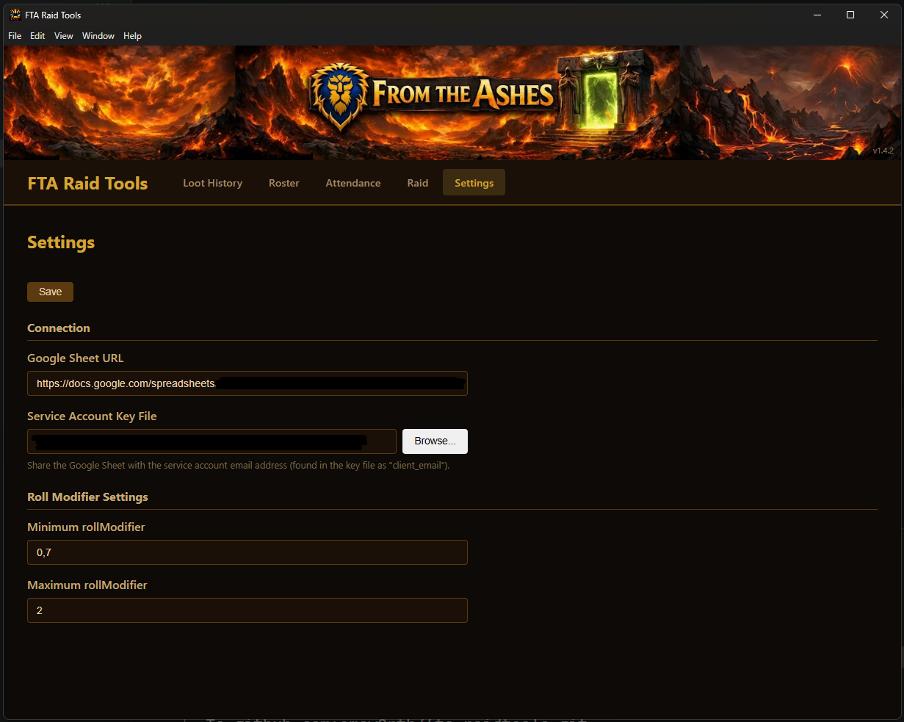
Connection
- Google Sheet URL — The full URL of the Google Sheet used for data storage. The app reads from and writes to this sheet.
- Service Account Key File — A JSON key file for a Google Cloud service account. Click Browse... to select the file on your machine.
client_email) with Editor permissions.
Roll Modifier Settings
- Minimum rollModifier — The lowest a player's roll modifier can go (e.g. 0). Deductions will not reduce a modifier below this value.
- Maximum rollModifier — The highest a player's roll modifier can reach (e.g. 10). Awards will not increase a modifier above this value.
Click Save to persist both connection settings and roll modifier bounds.
Roster
The Roster page is the central registry of all guild members. Each member's character info, specializations, professions, and current roll modifier are tracked here.
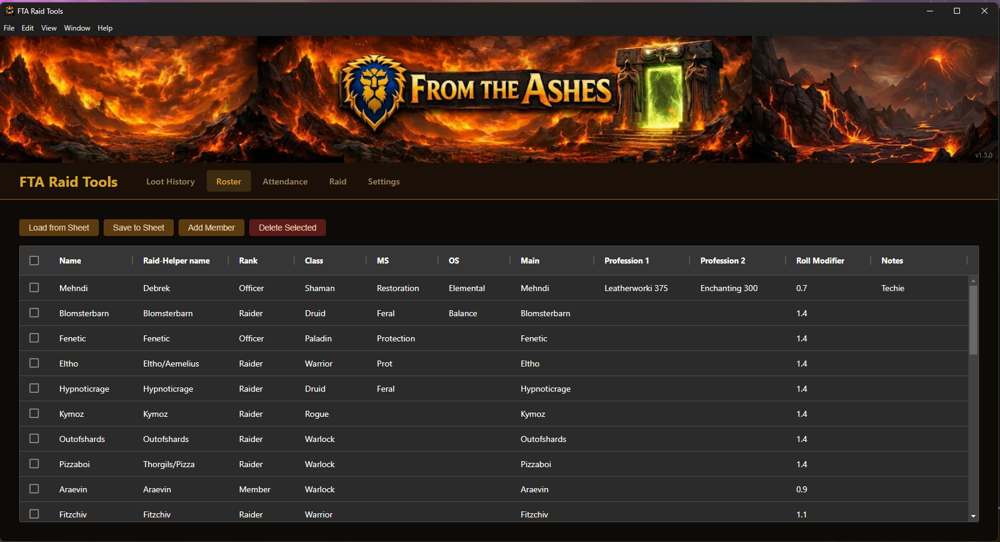
Toolbar Actions
- Load from Sheet — Pulls the latest roster data from Google Sheets
- Save to Sheet — Pushes the current roster data to Google Sheets
- Add Member — Opens a dialog to add a new guild member
- Delete Selected — Removes selected members from the roster
Adding a Member
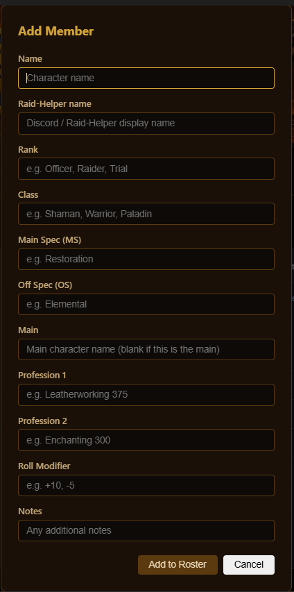
| Field | Description |
|---|---|
| Name | The character's in-game name |
| Raid-Helper name | The player's Discord / Raid Helper display name (used for matching attendance) |
| Rank | Guild rank (e.g. Officer, Raider, Trial) |
| Class | Character class (e.g. Shaman, Warrior, Paladin) |
| Main Spec (MS) | Primary specialization (e.g. Restoration, Protection) |
| Off Spec (OS) | Secondary specialization |
| Main | Main character name (leave blank if this is the main) |
| Profession 1 / 2 | Character professions with skill level (e.g. Leatherworking 375) |
| Roll Modifier | The player's current balanced roll modifier value |
| Notes | Any additional notes about the player |
Raid Settings
The Raid page lets you configure per-raid settings that control how roll modifiers are calculated. Each raid (e.g. Karazhan, Gruul's Lair) can have its own award and deduction values.
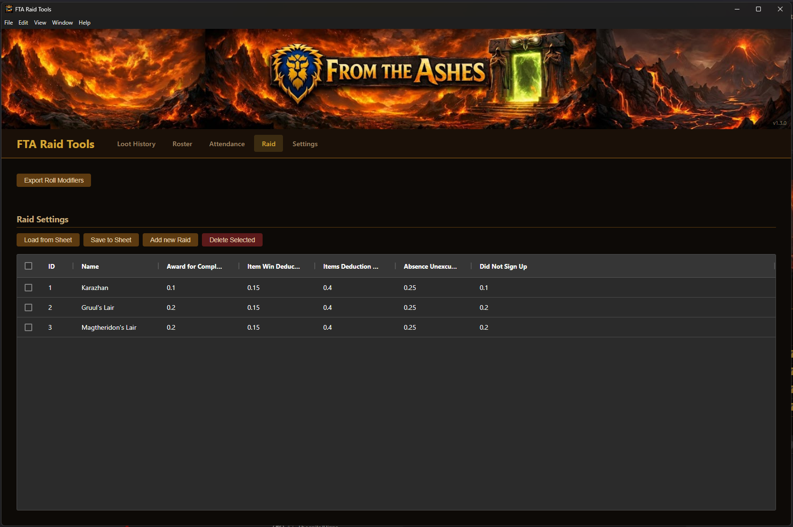
Toolbar Actions
- Export Roll Modifiers — Exports the current roll modifier data
- Load from Sheet — Loads raid settings from Google Sheets
- Save to Sheet — Saves current raid settings to Google Sheets
- Add new Raid — Opens a dialog to create a new raid configuration
- Delete Selected — Removes selected raid configurations
Adding a Raid
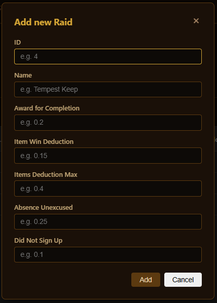
| Field | Description |
|---|---|
| ID | A unique numeric identifier for the raid |
| Name | The raid name (e.g. Karazhan, Gruul's Lair) |
| Award for Completion | Roll modifier points awarded to each attendee upon raid completion (e.g. 0.1 – 0.2) |
| Item Win Deduction | Points deducted from a player's roll modifier when they win an item (e.g. 0.15) |
| Items Deduction Max | Maximum total deduction a player can receive from item wins in a single import (e.g. 0.4) |
| Absence Unexcused | Deduction applied when a signed-up player does not attend (e.g. 0.25) |
| Did Not Sign Up | Deduction applied when a roster member did not sign up for the event at all (e.g. 0.1) |
Attendance
The Attendance page lets you record raid attendance by pulling sign-up data from Raid Helper events. It automatically matches event sign-ups to roster members and applies roll modifier awards and deductions.
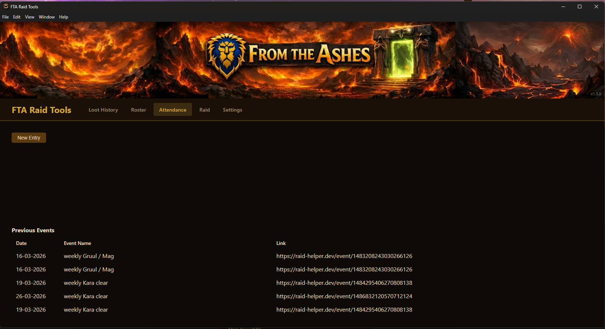
Creating an Attendance Entry
Click New Entry to open the attendance dialog.
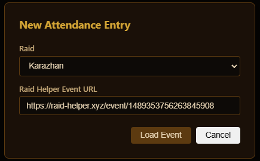
- Select the Raid from the dropdown (this determines which raid settings to use for awards/deductions)
- Paste the Raid Helper Event URL from your Discord event
- Click Load Event to fetch the sign-up data
Reviewing Attendance
After loading the event, the application displays all sign-ups matched against the roster. Each attendee is shown with their class, spec, role, award points, and the roster member they matched to.
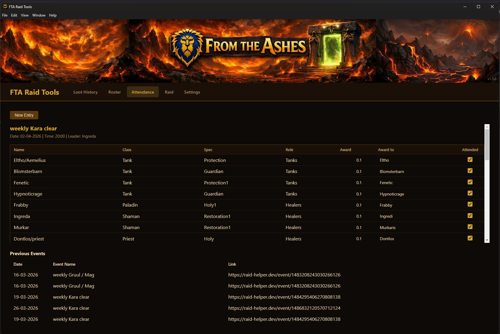
- Award — The points to be added to the player's roll modifier (from the raid's "Award for Completion" setting)
- Award To — Which roster member the points are awarded to (auto-matched by Raid Helper name)
- Attended — Checkbox to confirm the player actually attended. Uncheck to exclude them from receiving an award.
Absences and Sign-Up Tracking
Below the attendees list, the application shows two additional sections:
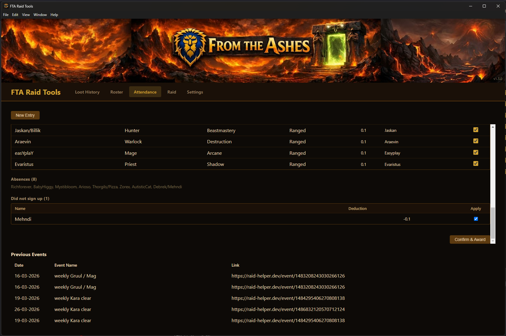
- Absences — Lists roster members who signed up but were not present. These are shown as a reference list.
- Did not sign up — Lists roster members who did not sign up for the event. A deduction (configured per-raid) can be applied to their roll modifier.
Review the deductions, check the Apply checkbox for any "did not sign up" entries you want to penalize, then click Confirm & Award to apply all awards and deductions to the roster's roll modifiers.
Loot History
The Loot History page tracks all loot drops across raids. Loot data is imported via CSV and automatically applies item win deductions to players' roll modifiers based on the selected raid's settings.
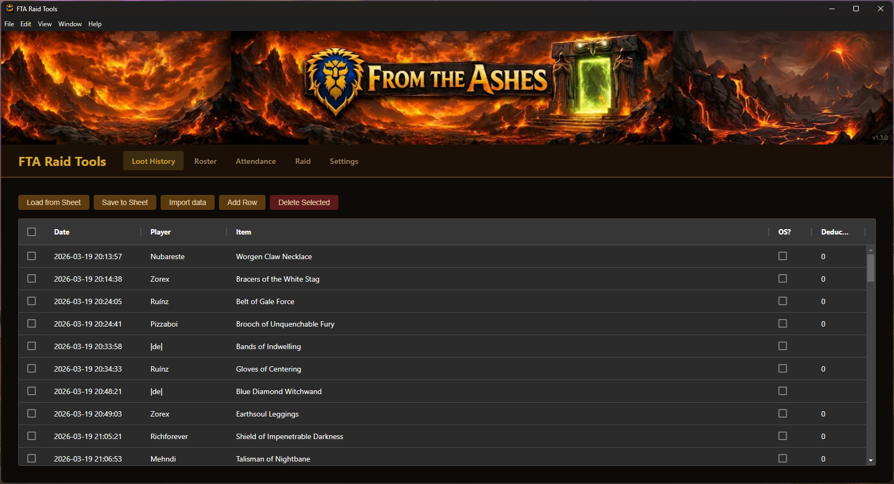
Toolbar Actions
- Load from Sheet — Pulls loot history from Google Sheets
- Save to Sheet — Pushes loot history to Google Sheets
- Import Data — Opens the CSV import dialog
- Add New — Manually add a single loot entry
- Delete Selected — Removes selected loot entries
Importing Loot Data
Click Import Data to open the import dialog.
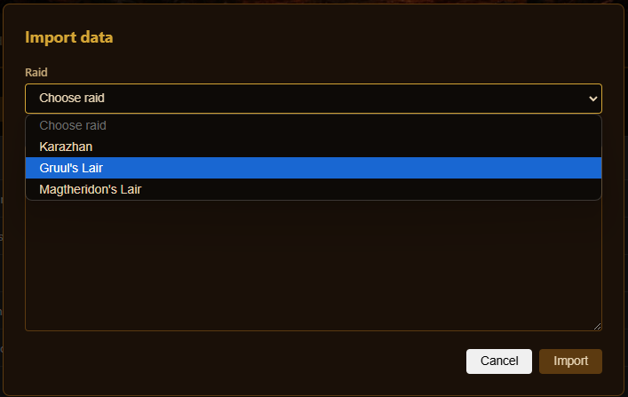
First, select the Raid this loot data belongs to. The raid selection determines which deduction values are applied.
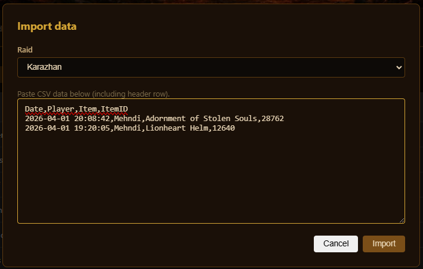
Paste your CSV loot data into the text area. The data must include a header row with the following columns:
Verifying the Import
After pasting and clicking Import, a verification dialog appears showing all parsed entries. Here you can mark items as Off-Spec (OS) — off-spec items do not count toward roll modifier deductions.
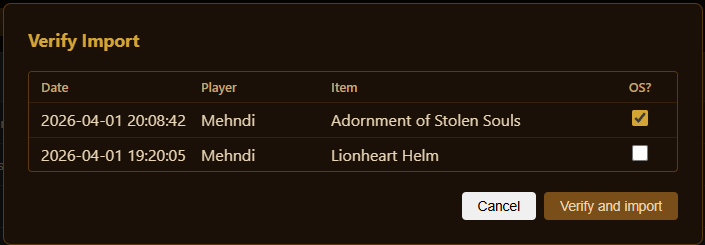
Check the OS? checkbox for any off-spec items, then click Verify and import to finalize. The item win deductions from the selected raid's settings will be applied to each player's roll modifier, up to the configured maximum deduction cap.
Raid Night Workflow
Here's a typical workflow for processing a raid night:
- Before the raid — Ensure your Roster and Raid Settings are loaded from the sheet and up to date
- After the raid — Go to the Attendance page, create a new entry with the Raid Helper event URL, review and confirm awards/deductions
- Import loot — Go to Loot History, import the loot CSV from the raid, verify off-spec items, and confirm
- Save everything — Save the Roster (updated roll modifiers) and Loot History to the sheet
How Roll Modifiers Work
Roll modifiers are the core mechanic of the balanced loot system. Each player has a roll modifier value that goes up when they attend raids and goes down when they win items or miss events.
Increases
- Raid completion — Each attended raid awards points based on the raid's "Award for Completion" value
Decreases
- Item wins — Winning a main-spec item deducts points based on the raid's "Item Win Deduction" value, up to the "Items Deduction Max" cap per import
- Unexcused absence — Signing up but not attending deducts points
- Did not sign up — Not signing up for an event can result in a deduction if applied by an officer
Boundaries
Roll modifiers are clamped between the Minimum rollModifier and Maximum rollModifier values configured on the Settings page. This prevents values from going too low (punishing inactive players forever) or too high (hoarding points).